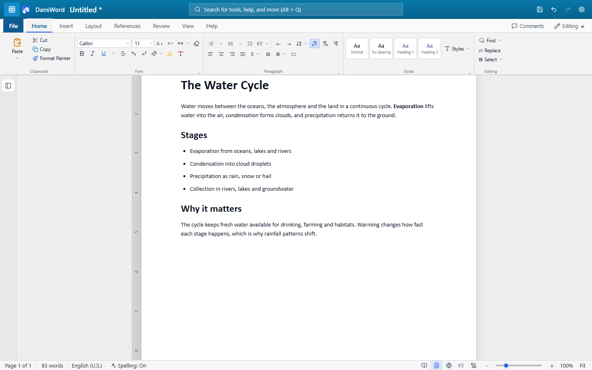
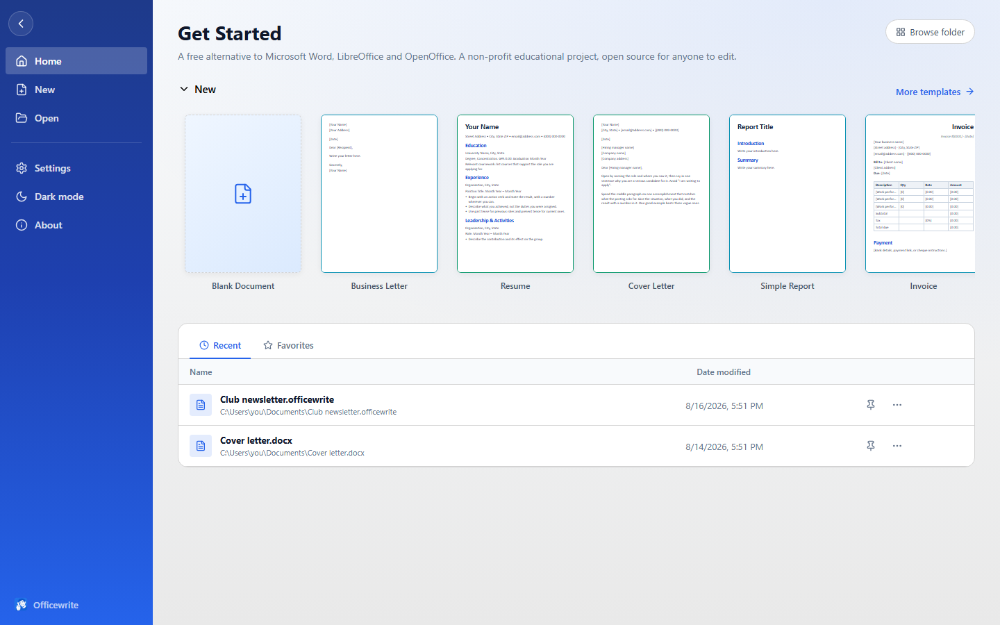

Write
Fonts, colours, text effects, bullets, numbering, checklists and multilevel lists, tables you can size to the inch, pictures with Word-style handles and seven wrap modes, shapes, text boxes and freehand ink.
Free · Open source · Non-profit educational project
Officewrite is a free alternative to Microsoft Word for essays, letters, reports and CVs
— with the ribbon, the styles and the .docx files you already know. Use it
free in your browser, or download it for Windows and work offline.
No account, no subscription, nothing uploaded.

Click a tab, the way you would in the app itself.

Everything below is built and working today. Anything missing is listed honestly in FEATURES.md — including what Officewrite still can't do.
Fonts, colours, text effects, bullets, numbering, checklists and multilevel lists, tables you can size to the inch, pictures with Word-style handles and seven wrap modes, shapes, text boxes and freehand ink.
A styles gallery, style sets, a table of contents that keeps itself current, footnotes and endnotes, captions, cross-references, an index, and citations in APA, MLA, Chicago or IEEE.
Spell check in English, German, Spanish and French, a grammar checker, AutoCorrect, an offline thesaurus, word count with readability, and an accessibility checker for alt text, headings and contrast.
Track changes with insertions and deletions, a reviewing pane, document compare, comments anchored to the text, and Editing / Reviewing / Viewing modes.
Open and save .docx, .rtf, .html,
.txt and the native .officewrite. Export a PDF. Print with a
preview so you can see the page breaks first.
Auto-save, up to twenty versions kept per document, and a delete that goes to the recycle bin rather than nowhere. No telemetry and no network calls of its own.
Keyboard first. The shortcuts are Word's — Ctrl+B, Ctrl+K, Ctrl+G, F7 — and the ribbon itself is fully keyboard-operable: arrow along the tabs, open a menu, and walk it without touching the mouse. Alt+Q searches every command by name.
Writing a school essay shouldn't need a subscription.
Officewrite is a non-profit educational project. It was built so students, teachers, families and anyone else who needs to write can do it without paying for office software — and so that people learning to program have a real, working application they can read end to end.
It is not trying to be a clone. It borrows the layout conventions a Word user already has in their fingers, then stops. Where it differs, it says so.
| Officewrite | Typical suite | |
|---|---|---|
| Cost | Free | Subscription |
| Account required | No | Usually |
| Works offline | Always | Sometimes |
| Source code | Yours to read | Closed |
| Telemetry | None | Common |
The honest version. Officewrite is younger and smaller than any of these — what it offers is that it is free, opens the same files, and asks nothing of you.
| Officewrite | Microsoft Word | LibreOffice Writer | Google Docs | |
|---|---|---|---|---|
| Cost | Free | Subscription or licence | Free | Free |
| Account required | No | Yes | No | Yes |
| Works offline | Yes | Yes | Yes | Limited |
| Runs in a browser | Yes | Yes | No | Yes |
| Reads and writes .docx | Yes | Yes | Yes | Import / export |
| Documents stay on your device | Yes | Optional | Yes | No |
| Open source | Yes | No | Yes | No |
Read more: a free alternative to Microsoft Word · how to open a .docx file without Word
Three commands and it's running on your machine. Pull requests welcome — the tests run on every one.
git clone https://github.com/DandanITman/Officewrite.git
cd Officewrite
npm install && npm run devCONTRIBUTING.md explains the layout of the code · testing.md explains how the tests are written · every test drives the app through the same controls a person clicks.
Windows 10 and 11 · free · no account
Download the latest Windows build
Older builds live on the
Releases
page. Prefer to compile it? npm run package.